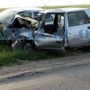

Dacă în cazul candidaţilor Vasile Laba şi Marcel Muia vina pentru ridicol e afundată în istoricul familial, Tati Norocosul nu mai are nicio scuză. Asta pentru că numele lui real e Nicolae Viorel Oprănescu, iar alegerea de a se prezenta alegătorilor drept tăticul cu bulan îi aparţine. Priviţi minune de afiş din campania electorală pentru funcţia de primar în Municipiul Slatina, reşedinţa judeţului Olt:
Afişul lui Tati Norocosul, cu poza de ginerică
Cât de norocos e tati!
Aşa de norocos e Tati, încât acum patru ani a reuşit să-şi facă maşina Dacia Nova cu numărul OT-15-SWT să arate fix aşa, prilej cu care şi-a trimis mama direct pe masa de operaţie a medicilor chirurgi, el însuşi finalizând tuning-ul la Reanimare. Asta după ce intrat în depăşire peste dubla linie continuă, convins fiind încă de pe atunci că e un mare norocos şi sigur nu circulă nimeni din sens opus. Ceasul rău şi pisica nr. 13 i-au trimis o Skoda Fabia pe contrasens la momentul oportun, iar Viorel Nicolae Oprănescu a devenit norocosul posesor al unui dosar penal pentru vătămare corporală din culpă. Cine nu şi-a dori o asemenea baftă?
Tati ec. Oprănescu zice în slogan că e “muncitor şi serios”. Unde naiba e norocul dacă truda metodică e principala ta calitate? Dacă vrei să scoţi în evidenţă bulanul proverbial, lozinca “primarul talentat şi inspirat” ar suna mult mai credibil.
Nicolae Oprănescu îşi încheie prezentarea electorală cu întrebarea retorică: “apreciem eforturile depuse?”, potrivit OltTv. Păi, tati, eşti norocos, de ce simţi nevoia să întrebi dacă oamenii văd că tu te strofoci? De fapt, prin interogaţia respectivă Oprănescu se plânge că nimeni nu-i răsplăteşte strădaniile. Halal noroc!
România profundă e sursa perenă de umor involuntar. Campaniile electorale aduc un plus de vizibilitate tragicomicului cotidian. Comedia e asigurată de nivelul cultural, intelectual şi moral al candidaţilor şi al unei bune părţi din electorat. Tragedia e consecinţa votului şi are loc în următorii patru ani.
Câte voturi a strâns Tati Norocosul?
(actualizare 2013)
Babacul băftos Nicolae Viorel Oprănescu n-a adunat mai mult de 251 de voturi de la slătineni. Aşadar, rezultatele alegerilor au confirmat ipoteza acră: tati e un ghinionist deghizat. Pe listele electorale au fost înscrişi 73.399 de alegători. 251 au pus ştampila pe tătic. Hai noroc!
Excentricului oltean îi plac numerele mici. Aşa că nu s-a lăsat păgubaş, încercându-şi norocul, din nou, la alegerile parlamentare din decembrie, sub sigla Partidului Alianţa Socialistă. De această dată a obţinut 154 de voturi valabil exprimate, deşi între timp reuşise performanţa de a deveni cunoscut în presa centrală. Pentru că s-a promovat pe Facebook pozând în chiloţi, cu ceasul la mână:
Oprănescu nu se lasă: se vrea primar şi europarlamentar!
Biorel
Nimic nu-i potoleşte setea electorală lui Tati Norocosu’. Întrucât primarul votat în iunie 2012 a câştigat un post de senator, la Slatina sunt organizate alegeri locale parţiale pe data de 3 februarie 2013. Candidatul profesionist Viorel Nicolae Oprănescu nu putea rata şansa de a se face încă o dată de râs! Bănuim că a reuşit să scape de ceasul Orient (“ce arată data şi ziua”) din fotografiile tinereţii, motiv pentru care bugetul de campanie a fost alimentat cu 400 de lei. Chestiune evidentă dacă privim imaginea de prezentare, profesionist stilizată în Paint. Dacă budigăii etalaţi la legislative nu v-au impresionat, treningul Dragonul roşu Adidas n-ar cum să dea greş.
Mai grav e că babacul bulănos ameninţă că-şi vinde tot din casă pentru a candida inclusiv la alegerile pentru Parlamentul European din 2014. Democraţia neaoşă îmbogăţeşte patologia: “Tati Norocosul” ar putea deveni denumirea sindromului dependenţei psihice de candidaturi ratate.
ile")


{kind=link}
{kind=link}
{kind=link}
@Sandra, involuntar. Festival de Umor involuntar. Deh, românii sunt un popor vesel, sunt oameni cărora le place să petreacă… (sursa citatului)
Eu cred ca asta si-a facut afis electoral la misto. Refuz sa accept ca exista un om serios si cu toti boii acasa care sa se autointituleze Tati Norocosul si apoi sa spere sincer la un fotoliu de primar. La fel cum refuz sa cred ca va avea vreun votant care sa puna stampila pe el altfel decat in gluma.
Pacat insa ca un lucru serios, ca alegerile, s-a transformat intr-un festival de umor.
eu cred ca nu ati inteles ce vrea sa spuna prin tati norocosu. ceu il cunosc. e vecin de-al meu. si are doi baieti mici, 2-3-4 ani. maxim. probabil ei ii zic asa. si da campaniei un aer mai personal. voi v-ati gandit repede la prostii!!!
@anca
Dacă soţia îl alinta Pufoşilă Ţucuraş, crezi că ar fi fost o idee bună să scrie chestia asta pe afişele de campanie?
Comments on this entry are closed.